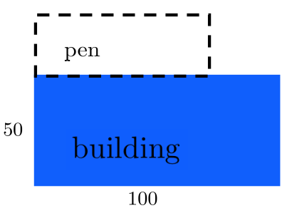

So far in this chapter the examples and problems weve chosen weve chosen emphasized the different aspects of optimization. Our intention was to show you the subtleties involved one at a time so you could understand them separately.
Of course, this is entirely unrealistic. Real problems rarely tell you where the difficulties will lie, so in this final section we offer you a selection of problems. It is up to you to
Find an appropriate objective function.
Identify the constraints.
Decide whether the natural domain of the problem consists closed intervals or not.
Identify which, if any, of the POTPs are global optima.
Re-read the problem and confirm that you have solved it.
This is a more important step than it sounds. When the problems are complex it is easy to lose track of the actual question and stop too soon, or go to far. Always make sure you have solved the problem stated and not some nearby problem..
Recall that in Example3.3.0.4 we observed that most people can see intuitively that of all rectangles with a fixed perimeter the one that encloses the greatest area will be a square. We gave an algebraic demonstration of this in Chapter3 but now that we know how to use Calculus to optimize lets revisit this problem.
Example9.7.0.1.Example3.3.0.4 revisited again.
We first solved this problem algebraically in Example3.3.0.4. In Drill9.2.0.10 we solved it again analytically (that is, using Calculus) using Fermats Theorem. But Fermats Theorem only allows us to find a maximum that we already know exists. Since we did not have the tools necessary to show that we actually had a maximum, we relied on our intuition and assumed that a maximum existed. We will solve this problem one last time, showing that there must be a maximum this time.
Show that of all rectangles with a fixed perimeter, \(P\text{,}\) the one with the greatest area is a square.
Since we are talking about a length it must be that \(x\ge0\text{.}\) From equation(9.26) we see that \(x\) must be less that or equal to \(\frac{P}{2}\text{.}\) Otherwise the perimeter will be greater than \(P\text{.}\) So the domain of our problem is \(0\le x\le \frac{P}{2}\text{.}\)
Since the problem domain is a closed interval we will use the Extreme Value Theorem (Theorem9.5.4.2). To find the POTPs we will need \(\dfdx{A}{x}\text{.}\) From equation(9.25) we see that
The only solution of \(\dfdx{A}{x}=0\) is \(x=\frac{P}{4}\text{,}\) so the POTPs for this problem are the end points, \(x=0\) and \(x=\frac{P}{2}\text{,}\) and \(x=\frac{P}{4}\text{.}\)
The area, \(A=xy\text{,}\) will be zero when \(x=0\) and when \(x=\frac{P}{2}\) (why?) so by the Extreme Value Theorem the maximum occurs when \(x=\frac{P}{4}\text{.}\)
This problem asks us to show that the maximal rectangle must be a square, so we need to show that \(x=y\text{.}\) We know that the maximum occurs when \(x=\frac{P}{4}\text{.}\) Plugging this value into equation(9.29) we see that \(y\) is also equal to \(\frac{P}{4}\text{.}\) Thus the maximal rectangle is a square as stated.
In Example9.7.0.1 we were careful to follow the steps we listed at the beginning of this section in the sequence given. That list is helpful. Thats why we wrote it out. However, it would be a mistake to think of it as a recipe to be followed blindly. Think of it as an outline. An outline is a guide, not a recipe and it is not necessary to follow it rigidly, step-by-step. If you find it simpler to do these steps in a different order for some problem there is no reason that you shouldnt. But before you declare the problem solved look back at this outline and make sure that you have done everything that needs to be done. This is what an outline is for.
In Example3.4.0.2 in Chapter3 we considered the related problem of minimizing the perimeter when the area is fixed. The following problem asks you to solve this problem using Calculus. Notice that just as above we have
\begin{equation*}
A=xy
\end{equation*}
and
\begin{equation*}
P=2x+2y
\end{equation*}
but this time \(A\) is constant, not \(P\text{.}\)
Drill9.7.0.2.
Out of all rectangles with a fixed area, find the dimensions of the one with the smallest perimeter.
(a)
Identify the objective function and the constraint for this problem.
(b)
Find the natural domain of this problem and show that it is not a closed interval.
(c)
Show that we have a POTP when \(x=y\text{.}\)
(d)
Show that when \(x=y\) we have a minimum by:
Using the first derivative test.
Using the second derivative test.
Note that both tests will require you to use the constraint to reduce the number of variables in the objective to one. Which test was easier to use?
Drill9.7.0.3.
Redo Drill3.3.0.5 from Chapter3 using Calculus. Verify that you get the same answer as before.
The following example demonstrates how different approaches to the same problem can lead to different challenges. In this case just changing the labels on the diagram makes a big difference.
Subsection9.7.1Two Ways to Optimize
The pages of a book are to have an area of \(90\) square centimeters. The side and bottom margins are to be \(1\) centimeter in width and the top margin is to be \(1/2\) centimeter in width.
Find the dimensions of the page that has the largest possible printed area, \(P_A\text{.}\)
SubsubsectionFirst Solution:
This problem can be visualized as in the diagram above. Since it is the printed area that is to be maximized it seems natural to label the width of the printed area, \(x\text{,}\) and the height, \(y\text{,}\) as shown. If we call the printed area \(P_A\) then our objective function is,
\begin{equation}
P_A=xy.\tag{9.30}
\end{equation}
The width of the entire page will be \(x+2\text{,}\) and the height will be \(y+3/2\text{.}\) The area of each page is constrained to be \(90\) square centimeters so our constraint is,
At this point it is tempting to expand \((x+2)^2\text{,}\) but recall that our goal is to solve for \(x\text{.}\) Multiplying through by \((x+2)^2\) gives
Solving this last equation gives \(x=\pm\sqrt{120}-2\text{.}\) But the width of a page cant be negative so a negative solution is meaningless for this problem. Thus \(x=\sqrt{120}-2\) is our one and only POTP, and we conclude that we can maximize the printed area by taking \(x=\sqrt{120}-2\approx 8.95\) centimeters.
That was a lot of work but we are not finished The problem asks us to find the dimensions (plural) of the page. To find \(y\) we use equation(9.33) to compute
But were still not finished. The problem asks for the dimensions of the page, but weve only found the dimensions of the printed area. The dimensions of the page are
\begin{align*}
\text{Width of page} = \textcolor{blue}{\text{width of text}}
+ \textcolor{red}{\text{margins}}\amp{} =\textcolor{blue}{\sqrt{120} -2}
+\textcolor{red}{2} \\
\amp{}=\sqrt{120} \approx 10.95 \text{ cm}\\\\
\text{Height of page} = \textcolor{blue}{\text{height of text}} + \textcolor{red}{\text{margins}}
\amp{}=\textcolor{blue}{\frac{90}{\sqrt{120}}-3/2} + \textcolor{red}{3/2} \\
\amp{}= \frac{90}{\sqrt{120}}\approx 8.22 \text{ cm}.
\end{align*}
Finally, the last item in our outline says to make sure we have done everything that needs to be done to solve the problem. Have we?
No, clearly not. We never did step3. As a result we dont know for certain that we have a maximum. It may be that the critical point weve identified is not in the problem domain. It may be that it is in the domain, but that we have a minimum instead of a maximum. Or that we have neither. The point is that we cant know until we have found the natural domain of the objective function, and verified that there is a global maximum at \(x=\sqrt{120}-2\approx8.95\) centimeters.
We mentioned earlier that the width of the page cant be negative so the smallest possible value of \(x\text{,}\) the left endpoint of our interval, is zero.
Problem9.7.1.1.
Show that the largest possible value of \(x\) is \(x=58\) and thus the natural domain for this problem is the closed interval \([0,58]\text{.}\)
Show that the maximal printed area occurs when \(x=2\sqrt{30}-2\text{.}\)
SubsubsectionSecond Solution
There is often more than one objective function that will work for any given problem. If your first attempt does not seem to be working --- even if you are sure you have an objective that will work --- you always have the option of going back to the beginning and trying to find another valid objective function.
For our second solution we will use the same diagram, but with different labeling. As you can see at the left, this time weve let \(x\) and \(y\) represent, respectively, the width and height of the page rather than of the printed area.
Our objective function is still the area of the printed portion of the page, but with the updated labeling this becomes
from which we see that \(\dx{y}=-\frac{y}{x}\dx{x}\text{.}\) From equation(9.37) we see that \(y=\frac{90}{x}\text{.}\) Substituting these into equation(9.36) we get
As before, we know that the width of a page cannot be negative so the only POTP is \(x=\sqrt{120}\text{.}\)
This time \(x\) and \(y\) represent the width and height of the page, so the width of the printed text is will be \(\sqrt{120}-2\) as before. Similarly the height of the printed text will be \(\frac{90}{\sqrt{120}}-\frac32\text{.}\)
Problem9.7.1.2.
Determine the natural domain of \(P_A(x)\) and show that \(P_A(x)\) is a global maximum when \(x=\sqrt{120}\text{.}\) Do you get the same page dimensions as before?
You will find that, quite often, simplifying complex expressions as much as possible with Algebra, Geometry, or Trigonometry will lead to easier Calculus computations. Conversely less non-Calculus work often leads to more challenging differentiations. But this is not a hard-and-fast rule. Sometimes you will find that leaving the formulas you generate unsimplified gives better insight into the problem, making things a little simpler overall, even if it makes the differentiation quite onerous.
Which parts of a given problem you find easy or difficult will depend on your skill level with your tools. With experience comes the ability to balance the workload across your skills. When you realize that one approach will lead to a complication that you know you will find difficult to handle, it can be beneficial to stop and look for another approach. If you find one, stop and try again from the beginning.
Then identify where your skill is lacking and give yourself some practice with that particular skill to improve your skills overall. Review, practice, and improve your Algebra, Geometry, and Trigonometry skills as needed.
A common mistake when abandoning a first attempt is to try to preserve and reuse computations left over from your first try. But that attempt didnt work. You need to try something new.
Subsection9.7.2Selected Optimization Problems
Drill9.7.2.1.Variations on a Theme.
(a)
Find two positive numbers whose sum is 10, and whose product is a maximum. What is the maximum?
Find two positive numbers whose sum is \(8\text{,}\) and whose product is a maximum. What is the maximum?
Find two positive numbers whose sum is \(K\text{,}\) and whose product is a maximum. What is the maximum?
(b)
Find two positive numbers such that the sum of one of them and twice the other is 10, and whose product is a maximum. What is the maximum?
Find two positive numbers such that the sum of one of them and three times the other is 10, and whose product is a maximum. What is the maximum?
Find two positive numbers such that the sum of one of them and five times the other is 10, and whose product is a maximum. What is the maximum?
Find two positive numbers such that the sum of one of them and \(n\) times the other is K, and whose product is a maximum. What is the maximum?
(c)
Find two positive numbers whose product is \(10\text{,}\) and whose sum is a minimum. What is the minimum?
Find two positive numbers whose product is \(M\text{,}\) and whose sum is a minimum. What is the minimum?
Find two positive numbers whose product is \(M\text{,}\) and the sum one number and three times the other is a minimum. What is the minimum?
Find two positive numbers whose product is \(M\text{,}\) and the sum one number and \(n\) times the other is a minimum. What is the minimum?
Drill9.7.2.2.Variations on a Theme.
You have \(500\) meters of fencing with which to build an animal pen.
(a)
What is the largest area you can enclose with a freestanding rectangular pen?
You want to build a pen divided into two equally sized internal pens. What is the largest area you can enclose?
You want to build a pen divided into three equally sized internal pens. What is the largest area you can enclose?
You want to build a pen divided into \(n\) equally sized internal pens. What is the largest area you can enclose? If \(w\) is the width and \(l\) is the length of the external pen what is \(\frac{w}{l}\text{.}\)
(b)
You want to use one side of a building as one full side of your pen as shown in the sketch below. What is the largest area you can enclose? What are the dimensions of the pen?

You want to use one side of a building as one partial side of your pen as shown in the sketch below. What is the largest area you can enclose? What are the dimensions of the pen?
You want to build your pen as shown in the sketch below. What is the largest area you can enclose? What are the dimensions of the pen?
You want to build your pen as shown in the sketch below. What is the largest area you can enclose? What are the dimensions of the pen?
You want to your pen to be subdivided into three parts as shown in the sketch below. What is the largest area you can enclose? What are the dimensions of the pen?
You want to build your pen as shown in the sketch below. What is the largest area you can enclose? What are the dimensions of the pen?
Drill9.7.2.3.
You have a piece of wire \(100\) inches long.
(a)
Find the length of each piece of the wire that yields the least total area bounded by the pieces when:
You cut the wire into two pieces and bend each piece to form a square.
You cut the wire into two pieces and bend each piece to form a circle.
You cut the wire into two pieces and bend one piece to form a square and the second to form a circle.
You cut the wire into two pieces and bend one piece to form a rectangle with one side three times as long as the other. Then bend the second piece to form a square.
You cut the wire into three pieces and form two squares and one circle circle.
(b)
Repeat each problem in part (a), but this time find the length of each piece of the wire that yields the most total area bounded by the pieces.
Drill9.7.2.4.
Consider the side view of a person at point \(P\) looking at a \(20\) foot tall billboard sign that is \(10\) feet off of the ground as shown in the diagram below.
(a)
Find a formula for the viewing angle \(\theta\) in terms of \(x.\) Dont forget to put in the range for possible values for \(x.\)
(b)
Find the value of \(x\) that will maximize the viewing angle \(\theta\text{.}\)
Drill9.7.2.5.
Find the value of \(r\) that maximizes the blue shaded area, \(A(r)\text{,}\) in the following diagram:
Drill9.7.2.6.
(a)
The strength of a rectangular wooden beam is proportional to its width times the square of its height. What is the ratio of the height to width of the strongest beam that can be cut from a cylindrical log?
(b)
The stiffness of a rectangular wooden beam is proportional to its width times the cube of its height. What is the ratio of the height to width of the stiffest beam that can be cut from a cylindrical log? Compare this to the answer in the previous problem.
(c)
Suppose we have an objective function which is proportional to the width times the \(n\)th power of the height? What would the optimal ratio be now?
Drill9.7.2.7.
A box with a square base and an open top must have a volume of \(32,000\) square centimeters.
Find the dimensions of the box that minimize the amount of material used to make the box.
Drill9.7.2.8.
The diagram above depicts the view from above a pole of length \(L\) being maneuvered horizontally around the \(90^\circ\) corner of two hallways of widths \(a\text{,}\) and \(b\text{.}\) Find the longest pole which can be turned around the corner.
(a)
Show that the maximum value of \(L\) is \(\left(a^\frac23+b^\frac23\right)^\frac32\text{.}\)
(b)
What would the maximum of \(L\) be in the special case where \(a=b\text{?}\) Does this answer make sense geometrically?
(c)
In the problem statement we specified that the pole was being maneuvered horizontally, meaning that the pole is kept parallel to the ground at all times. Suppose we remove that constraint and that the height of the hallway is \(h\text{.}\) What is the longest pole we can get around the corner now?
Drill9.7.2.9.
(a)
A Norman window has the shape of a rectangle surmounted by a semicircle.
Find the dimensions of the window that allow the most light to enter if the perimeter of the window is \(30\) feet.
(b)
Find the dimensions of the window that allow the most light to enter if the window is surmounted by an equilateral triangle.
Drill9.7.2.10.
(a)
At which points on the curve \(y=1+40x^3-3x^5\) does the tangent line have the greatest slope?
(b)
Find the coordinates of the points on the graph of \(4x^2+y^2=4\) which are farthest from the point \((1,0)\text{.}\)
Drill9.7.2.11.Find the Pattern.
(a)
Find the area of the smallest triangle formed by the \(x\) and \(y\) axes and a line passing through the point \((2,1).\)
(b)
Find the area of the smallest triangle formed by the \(x\) and \(y\) axes and a line passing through the point \((3,4).\)
(c)
Find the area of the smallest triangle formed by the \(x\) and \(y\) axes and a line passing through the point \((a,b)\text{,}\) where \(a, b\gt 0\text{.}\)
Drill9.7.2.12.
(a)
We draw the right triangle whose hypotenuse starts at the origin, \((0,0)\) and ends on the Witch of Agnesi, \(W(x)=\frac{1}{1+x^2}\text{.}\) The other legs are as shown in the figure below:
Of all triangles for which \(\alpha\) is in the interval \([0,\infty)\) which one has the largest area?
(b)
Now suppose that for each function given below a triangle is constructed in the same manner used in part (a). Assume \(a\text{,}\)\(b\text{,}\)\(c\text{,}\) and \(k\) are constants. Of all possible such triangles for which \(\alpha\) is in the interval \([0,\infty)\) which one has the largest area?
\(\displaystyle f(x) = \frac{k}{x^2+1}\)
\(\displaystyle f(x) = \frac{1}{x^2+3}\)
\(\displaystyle f(x) = \frac{1}{5x^2+1}\)
\(\displaystyle f(x) = \frac{a}{bx^2+c}\)
Problem9.7.2.13.Variations on a Theme.
To prevent squirrels from eating her birdseed a mathematician wants to hang a bird feeder so that its top is \(5\) feet above the ground. To do this she attaches each end of a wire between two trees at a height of \(8\) feet above the ground, with the feeder hanging from a second wire, \(x\text{,}\) attached at the midpoint of the first as seen in the sketch at the right.
(a)
Find the value of \(x\) that requires the least amount of wire if the trees are \(10\) feet apart.
What will the total length of the wire be?
Show that \(\theta_1=\theta_2=\theta_3\text{.}\)
(b)
Find the value of \(x\) that requires the least amount of wire if the trees are \(12\) feet apart.
What will the total length of the wire be?
Show also that \(\theta_1=\theta_2=\theta_3\text{.}\)